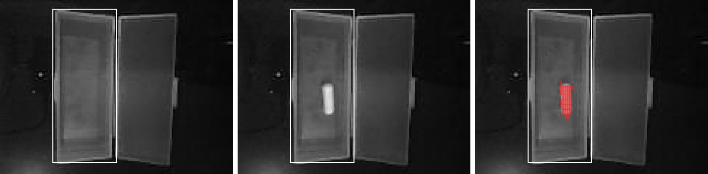
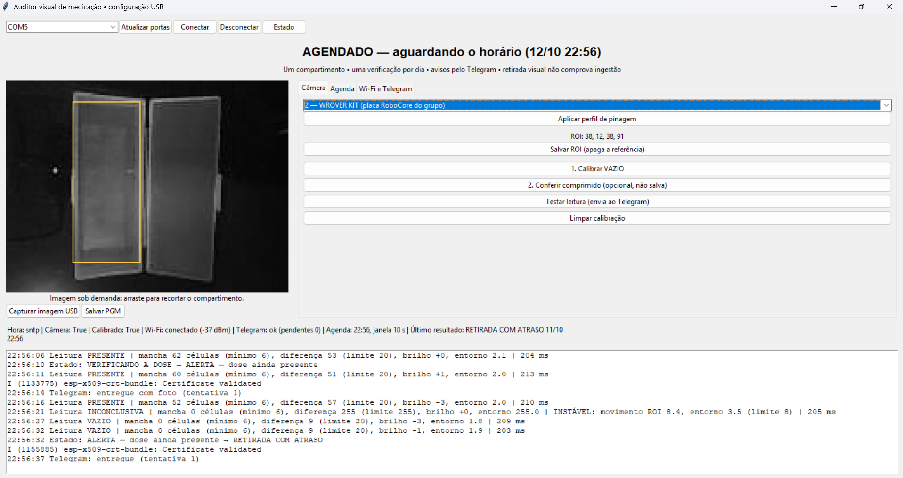
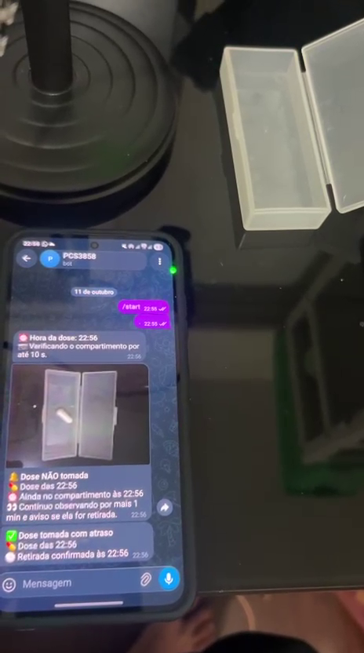
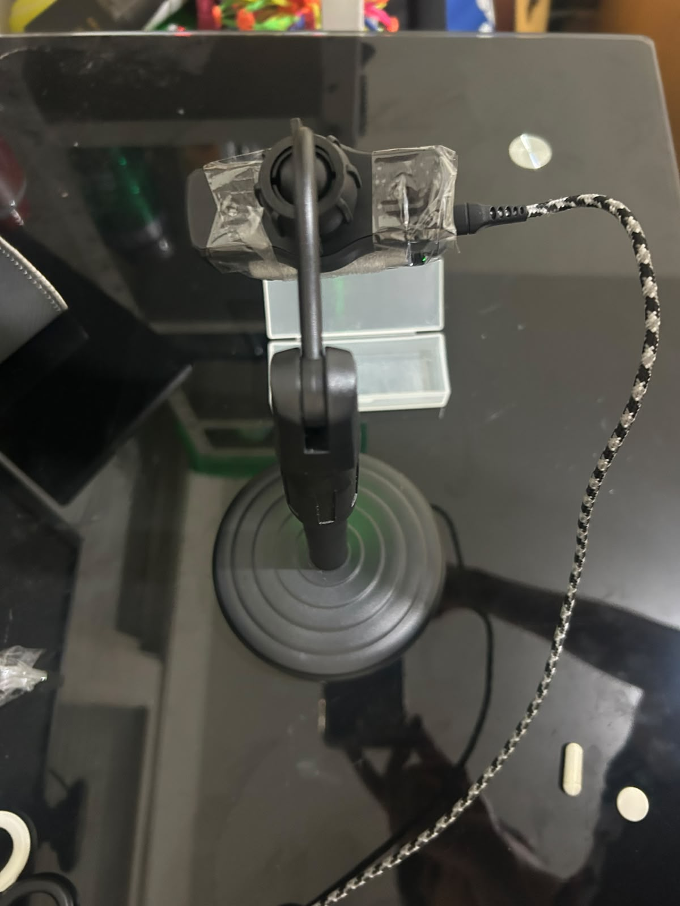
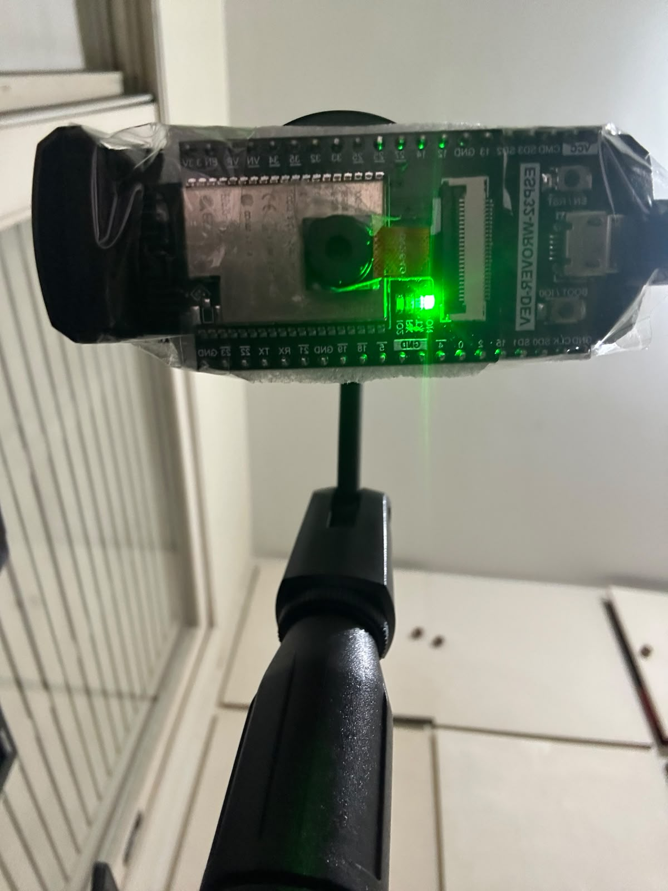
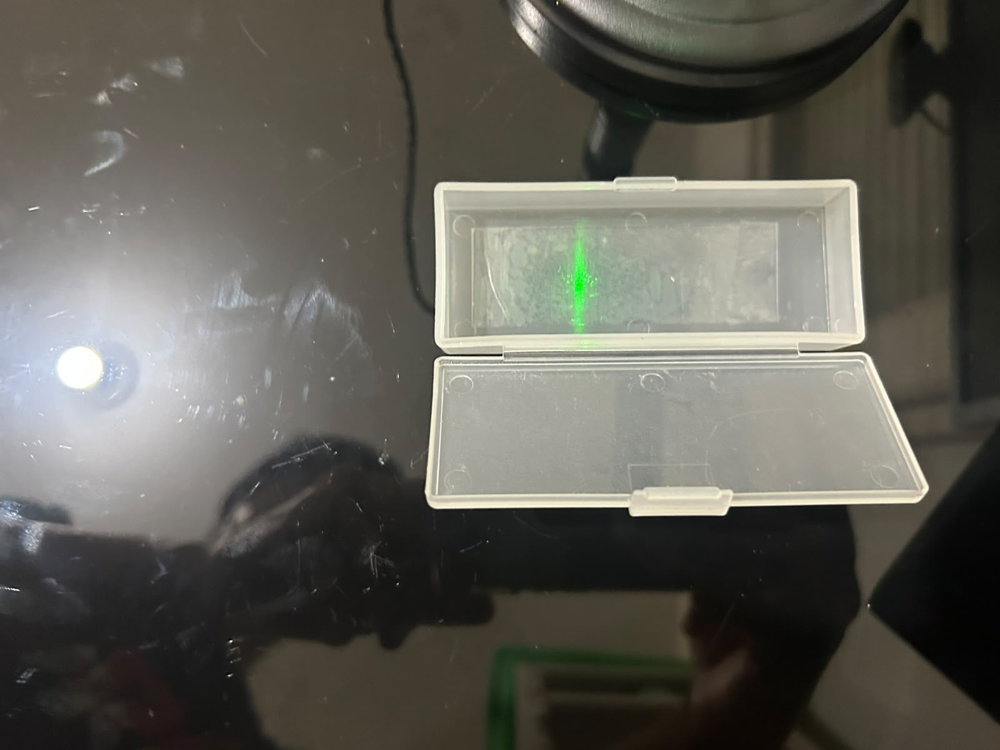
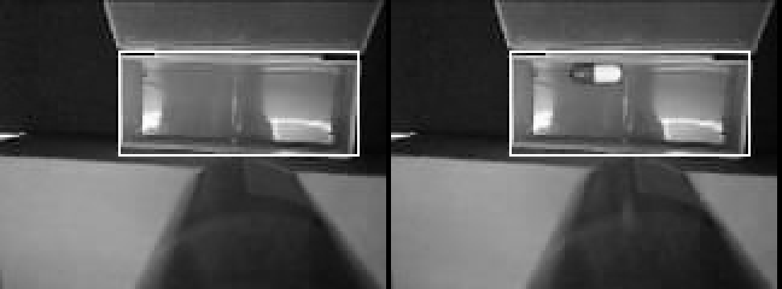
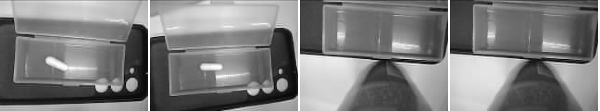

| Gabriel Dias Tambelli | NUSP 12551370 |
| Henrique Murakami de Paula | NUSP 12551154 |
| Juliana Marcarini Carloni | NUSP 12553538 |
Repositório: github.com/Tambelli/auditor-de-medicacao (ramo mvp-autonomo-telegram)
São Paulo, outubro de 2026
A não adesão ao tratamento medicamentoso é frequente entre idosos e portadores de doenças crônicas, e o esquecimento de doses gera complicações e sobrecarga para familiares e cuidadores. O Auditor Visual de Medicação é um dispositivo passivo, colocado sobre um porta-comprimidos convencional, que verifica com uma câmera se a dose do dia foi retirada do compartimento e avisa o cuidador quando isso não acontece.
O protótipo não dispensa comprimidos, não identifica o medicamento e não comprova a ingestão: ele observa o estado do compartimento (dose presente ou retirada) dentro de uma janela de horário. Todo o processamento de imagem e a decisão ocorrem no próprio microcontrolador.
O projeto seguiu a espiral evolucionária prevista na metodologia: a cada ciclo, os requisitos foram revistos à luz do que foi aprendido em bancada. A tabela resume as três versões do escopo.
| Aspecto | Proposta inicial (set/2026) | Plano consolidado (Tarefa 02, 18/09) | MVP atual (out/2026) |
|---|---|---|---|
| Placa | Seeed XIAO ESP32-S3 Sense | Waveshare ESP32-S3-ETH + câmera OV2640-V3 avulsa | ESP32-CAM RoboCore com gravador integrado (ESP32 clássico, OV2640 integrada) |
| Classificação | Rede neural convolucional (TinyML) | Comparação com referências cheio/vazio | Só a referência “vazio”: qualquer objeto no compartimento é dose (seção 6.3) |
| Hora | RTC DS3231 externo | Ajuste manual pela serial | SNTP pela Internet (ajuste manual mantido para bancada) |
| Alerta | Wi-Fi ao cuidador | Buzzer + botão; Wi-Fi opcional | Telegram com foto; sem buzzer e sem botão |
| Alimentação | Bateria 18650 + deep sleep | Fonte 5 V; PC para configurar e registrar | Fonte USB 5 V; funciona sem computador |
| Compartimentos | 7 dias × 3 horários | 1 compartimento | 1 compartimento, 1 dose por dia |
Por que mudou. A CNN exigiria um conjunto de imagens rotuladas que o grupo não possui. A comparação com uma referência calibrada na própria cena é explicável, não precisa de treinamento e cabe na memória do ESP32 clássico. A ESP32-CAM já traz câmera, conector e gravador USB, o que eliminou o risco de compatibilidade elétrica e mecânica da câmera avulsa prevista para a Waveshare. Na revisão de outubro, o grupo decidiu que o produto precisa funcionar só ligado a uma fonte, avisando o cuidador à distância. Um buzzer avisa apenas quem está perto do aparelho, então o canal remoto (Telegram) passou de extensão opcional a requisito principal, e buzzer e botão saíram do escopo. O organizador semanal de 7 compartimentos ficou como extensão.
Os requisitos partem da Tarefa 02 e foram revisados para o MVP autônomo. Situação: VERIFICADO na placa; IMPLEMENTADO e testado em software, falta ensaio na placa; PENDENTE. A etiqueta ALTERADO indica requisito revisto na mudança de escopo.
| ID | Requisito | Situação |
|---|---|---|
| RF01 | Configurar horário da dose, tolerância, intervalo de captura, Wi-Fi e Telegram pelo computador (USB); os valores ficam na placa. | VERIFICADO |
| RF02 | Calibrar e salvar a região de interesse (ROI) e a referência do compartimento vazio, com medição do ruído; conferir opcionalmente se a dose se destaca. | ALTERADO VERIFICADO |
| RF03 | Executar a verificação automaticamente todo dia no horário programado, sem o computador. | ALTERADO IMPLEMENTADO |
| RF04 | Classificar cada leitura como dose presente, vazio ou inconclusiva, para qualquer comprimido em qualquer posição do compartimento. | ALTERADO VERIFICADO (4 situações; ensaio RNF03 pendente) |
| RF05 | Confirmar retirada só se a dose foi vista na janela e depois houve leituras vazias consecutivas; vazio sem dose vista vira “não reposta”. | IMPLEMENTADO |
| RF06 | Avisar o cuidador se a dose continuar no compartimento ao fim da tolerância, com foto, e continuar observando para avisar uma retirada atrasada. | ALTERADO (era buzzer) IMPLEMENTADO |
| RF07 | Informar o estado do sistema pela serial (painel) e pelo Telegram. | ALTERADO (sem botão) VERIFICADO |
| RF08 | Registrar capturas, classificações, transições e falhas em JSON pela serial; enviar o resultado diário ao Telegram. | VERIFICADO |
| RF09 | Detectar falha de câmera, imagem inválida e falta de hora; avisar e nunca declarar retirada nesses casos. | IMPLEMENTADO |
| RF10 | Manter configuração, calibração e credenciais em memória não volátil; após reinício, recuperar a hora pelo SNTP e rearmar sozinho, sem inferir retirada no período desligado. | ALTERADO VERIFICADO (persistência e aviso de boot) |
| RF11 | Rearmar automaticamente a verificação do dia seguinte, sem reutilizar o resultado anterior. | ALTERADO IMPLEMENTADO |
| RF12 | Notificar o cuidador pelo Telegram via Wi-Fi; sem rede, a verificação continua e as mensagens aguardam na fila. | ALTERADO (era opcional) VERIFICADO |
| ID | Requisito | Situação |
|---|---|---|
| RNF01 | Execução embarcada: aquisição, classificação, agenda e decisão no ESP32; o computador serve só para configurar. | VERIFICADO |
| RNF02 | Desempenho: até 2 s por leitura (2 quadros + análise); aviso enviado logo após o fim da janela. | VERIFICADO leitura: 168–220 ms |
| RNF03 | Qualidade: ≥ 90% de acerto por classe em 30 observações de cada classe fora da calibração; zero retiradas indevidas em 10 oclusões. | PENDENTE (ensaio previsto) |
| RNF04 | Reprodutibilidade: suporte, distância, iluminação e objetos documentados. | EM ANDAMENTO (suporte fixo em construção) |
| RNF05 | A decisão independe da rede; só o envio do aviso depende do Wi-Fi. | ALTERADO IMPLEMENTADO |
| RNF06 | Estabilidade: 20 ciclos consecutivos sem reinício; watchdog de tarefas; memória acompanhada no status. | PENDENTE (watchdog implementado) |
| RNF07 | Integração elétrica: fonte de 5 V / 2 A sem reinícios por queda de tensão (brownout). | EM ANDAMENTO |
| RNF08 | Usabilidade: configuração guiada pelo painel; mensagens claras ao cuidador. | VERIFICADO |
| RNF09 | Dados: imagens processadas localmente; foto pequena (160 × 120) enviada apenas ao chat do cuidador, só quando é preciso conferir; senhas e token nunca aparecem nos registros. | ALTERADO VERIFICADO |
| RNF10 | Manutenibilidade: módulos separados, testes automatizados e integração contínua. | VERIFICADO |
| RNF11 | Custo: usar a placa disponível, sem compras eletrônicas adicionais. | VERIFICADO |
| RNF12 | Portabilidade das ferramentas: painel, compilação e testes no Windows, macOS e Linux. | VERIFICADO (CI no Ubuntu e no macOS) |
O ciclo de uso tem duas fases. Na instalação, feita uma única vez com o computador, o cuidador posiciona a câmera sobre o compartimento, informa Wi-Fi e Telegram, escolhe o horário, recorta a região do compartimento e calibra as imagens “vazio” e “presente”. Na operação, o aparelho fica ligado só na fonte. O cuidador repõe a dose a qualquer momento antes do horário; na janela, o aparelho verifica a retirada e envia o resultado ao celular.
Figura 1 — Fluxo de uso diário.
Figura 2 — Diagrama de blocos do hardware. Não há componentes eletrônicos externos.
O firmware é escrito em C++17 sobre ESP-IDF 5.4.1 e FreeRTOS. O núcleo (components/auditor) contém a visão, a classificação, a agenda e a máquina de estados, sem depender de hardware. Por isso ele compila e é testado no computador. Os módulos de plataforma ficam em main/.
| Módulo | Responsabilidade |
|---|---|
components/auditor | Extração de características (ROI 32×32 e entorno), distâncias, classificação, cálculo da próxima janela e máquina de estados Cycle. |
main/app_main.cpp | Laço principal: comandos USB, supervisão (Wi-Fi, hora, câmera), agenda, leituras e transições; monta as mensagens ao cuidador. |
main/camera.cpp | Único dono do driver esp32-camera; captura JPEG, converte para cinza e guarda o último JPEG para a foto. |
main/network.cpp | Wi-Fi em modo estação com reconexão por espera crescente; SNTP com dois servidores; fuso UTC−3. |
main/notify.cpp | Tarefa do Telegram com fila de 8 mensagens, HTTPS e novas tentativas. |
main/storage.cpp | Configuração e referências versionadas em NVS (memória não volátil). |
main/events.cpp | Eventos JSON na serial, com tempo monotônico e hora civil. |
tools/ (Python) | Painel gráfico, console, protocolo, avaliador de ensaios, compilação multiplataforma e testes. |
| Tarefa | Prioridade / pilha | Função |
|---|---|---|
main (app_main) | padrão · 24 KB | Laço de 100 ms: comandos, supervisão, agenda e leituras. Monitorada pelo watchdog (30 s). |
usb_commands | 4 · 4 KB | Lê bytes da UART0 e entrega comandos (linhas JSON) a uma fila de 8 itens. |
| Telegram | 3 · 10 KB | Consome a fila de avisos e faz o HTTPS. Isola a latência da rede das capturas. |
cam_task (driver) | núcleo 1 · 4 KB | Recepção DMA dos quadros da câmera. |
sys_evt, Wi-Fi, lwIP | ESP-IDF | Eventos de rede, pilha TCP/IP e SNTP. |
O hardware é uma plataforma comercial (COTS). O trabalho de projeto foi identificar a placa, descobrir a pinagem real da câmera, dimensionar a alimentação e definir a montagem mecânica.
| Item | Observado |
|---|---|
| Microcontrolador | ESP32-D0WD-V3, revisão 3.0, cristal de 40 MHz (lido com o esptool) |
| Conversor USB | WCH CH340 (VID:PID 1A86:7523), com circuito automático de reset/boot |
| PSRAM | 8 MB detectados; o ESP32 mapeia 4 MB, que viram heap (~4,3 MB livres no boot) |
| Flash | 16 MB detectados (a página do fabricante informa 4 MB); o firmware usa 4 MB |
| Câmera | OV2640 (PID 0x26), detectada somente com a pinagem “WROVER KIT” (perfil 2) |
Apesar do nome comercial ESP32-CAM, a placa da RoboCore não segue a pinagem AI-Thinker, que é a mais comum: o clock da câmera (XCLK) está no GPIO21, e não no GPIO0. Como não havia esquema elétrico, o firmware oferece os dois perfis e a escolha fica salva na NVS, sem recompilar. Na placa, o perfil 1 falhou na sonda SCCB (ESP_ERR_NOT_FOUND) e o perfil 2 funcionou.
| Sinal | Perfil 1 (AI-Thinker) | Perfil 2 (WROVER KIT) — usado |
|---|---|---|
| PWDN / RESET | 32 / — | — / — |
| XCLK | 0 | 21 |
| SCCB SDA / SCL | 26 / 27 | 26 / 27 |
| D0–D3 | 5, 18, 19, 21 | 4, 5, 18, 19 |
| D4–D7 | 36, 39, 34, 35 | 36, 39, 34, 35 |
| VSYNC / HREF / PCLK | 25 / 23 / 22 | 25 / 23 / 22 |
A ordem de boot foi definida pelos problemas encontrados em bancada: NVS, UART e câmera antes da rede (a câmera precisa de blocos contíguos de memória interna, que o Wi-Fi fragmenta), depois a tarefa do Telegram, o Wi-Fi e o SNTP. Por fim vêm o evento boot (versão, motivo do reset, PSRAM) e o watchdog. Quando a hora chega pelo SNTP, o aparelho envia ao cuidador a mensagem “Auditor ligado”, com o motivo do reinício, o que falta configurar e a próxima verificação.
Figura 3 — Máquina de estados Cycle. NotLoaded, Alert e Fault enviam foto.
confirmations leituras vazias consecutivas (padrão 2). Se o intervalo entre leituras passar de interval_s + 2 s, a sequência recomeça.late_s (padrão 30 min). Uma retirada nesse período gera LateRemoved.next_window_offset converte o horário civil na próxima janela, inclusive na virada da meia-noite. Se o aparelho reinicia com a janela de hoje aberta, ela é retomada com o tempo restante. Uma janela concluída nunca se repete no mesmo dia.
Três ciclos da espiral na visão. (1) A primeira versão comparava com uma foto “cheio” e uma “vazio” pela média das diferenças, e um comprimido pequeno (~4% da ROI) ficava abaixo do ruído do JPEG. (2) A média das 10% maiores diferenças resolveu o comprimido pequeno (31,8 contra 8,9 de ruído). (3) Em 11/10, o teste em bancada com quatro situações mostrou o limite do método: outra cápsula e o mesmo comprimido deslocado davam inconclusivo, porque “presente” significava “este comprimido nesta posição”. Mas a distância ao vazio separava bem: ~10 no vazio contra 36–46 nos três casos com comprimido. Daí o critério atual, que só pergunta “o compartimento está diferente de vazio?”. Nas imagens reais, o vazio gera mancha de 0 células e o comprimido, de 37.
Por que não treinar uma rede neural. Com câmera fixa, “vazio ou ocupado” é resolvido pela subtração de fundo. Uma CNN exigiria centenas de imagens rotuladas, seria mais lenta no ESP32 clássico e mais difícil de explicar. Ela fica como extensão se os ensaios de acurácia mostrarem falhas por iluminação que a compensação não resolva.
Calibração: “Calibrar VAZIO” coleta cinco quadros comparados ao primeiro e é recusada, com mensagem específica, se a cena mudar ou a imagem estiver escura/saturada. “Conferir comprimido” é opcional: informa se uma dose se destaca (tamanho da mancha e diferença), sem salvar nada.
A aplicação nunca espera pela rede: ela coloca o aviso numa fila de 8 itens, que a tarefa do Telegram consome. Cada mensagem tem até 20 tentativas, com espera crescente de até 300 s. Respostas 4xx (token ou chat errado) não são repetidas, exceto 429 (limite de envio). Sem Wi-Fi, a verificação continua e as mensagens aguardam a reconexão. A foto anexada é o último JPEG analisado, e só é enviada se for da janela atual.
| Enlace | Protocolo | Uso no projeto |
|---|---|---|
| Computador ↔ ESP32 | USB → UART0 (CH340), 115200 8N1; JSON Lines (protocolo próprio, até 511 B por comando) | Configuração, calibração, comandos de teste e eventos de registro. Detalhado abaixo. |
| ESP32 ↔ câmera | SCCB (compatível com I²C) + DVP paralelo de 8 bits com DMA (I2S) | SCCB configura o sensor OV2640 (formato, qualidade JPEG); o DVP transfere os quadros. |
| ESP32 ↔ roteador | IEEE 802.11 b/g/n 2,4 GHz, WPA2-PSK; DHCP | Acesso à Internet em modo estação. |
| Hora | SNTP (UDP 123) | Servidores a.st1.ntp.br e pool.ntp.org; fuso fixo UTC−3. |
| ESP32 → Telegram | HTTPS (HTTP/1.1 sobre TLS, mbedTLS e pacote de certificados raiz) | Bot API: sendMessage (corpo JSON) e sendPhoto (multipart/form-data com o JPEG). |
Cada comando é um objeto JSON terminado por LF, com id opcional. A placa responde com event=reply (repete o id, com ok e message) e emite eventos assíncronos com ms (tempo monotônico) e epoch (UTC, zero sem hora). Durante uma verificação, só status e cancel são aceitos. Exemplos:
→ {"cmd":"set","hour":8,"minute":0,"window_s":1800,"interval_s":5,"late_s":1800,"id":7}
← {"event":"reply","ms":51234,"epoch":1792152000,"id":7,"ok":true,"message":"..."}
→ {"cmd":"calibrate","label":"empty"}
→ {"cmd":"sample","notify":true}
← {"event":"observation","label":"present","captured":true,"stable":true,
"distance_present":3.1,"distance_empty":29.4,"distance_context":2.8,"duration_ms":172,...}
← {"event":"transition","from":"monitoring","state":"removed","demo":false,...}
← {"event":"status","state":"armed","wifi":"connected","rssi":-41,"heap":...}
Comandos: status, set, calibrate, clear_calibration, snapshot (imagem em base64), sample, arm (com delay_s para demonstração), cancel, time, wifi, telegram e test_notify. O painel mascara senha e token no registro, e o firmware nunca os devolve.
O cuidador cria um bot no BotFather, que fornece o token, e envia uma mensagem ao bot. O chat_id é obtido em getUpdates. Pode ser o chat individual do cuidador ou um grupo, com identificador negativo, para avisar vários familiares. A placa faz requisições POST a https://api.telegram.org/bot<token>/sendMessage e …/sendPhoto. O certificado do servidor é validado com o pacote de CAs do ESP-IDF.
| Categoria | Escolha |
|---|---|
| Linguagens | C++17 (firmware e núcleo), Python 3 (painel, console e scripts), CMake |
| Sistema operacional embarcado | FreeRTOS (incluso no ESP-IDF): tarefas, filas, semáforos, timers e watchdog |
| Framework | ESP-IDF 5.4.1: esp_wifi, esp_netif, lwIP, esp_netif_sntp, esp_http_client, mbedTLS, NVS, esp_psram |
| Bibliotecas | esp32-camera 2.0.16 (Espressif), cJSON; no PC: pyserial, Tkinter |
| Compilação e gravação | PlatformIO Core 6.1.18 (plataforma espressif32 6.11.0), esptool; script tools/build.py para Windows, macOS e Linux |
| Testes | Testes nativos do núcleo C++ (311 verificações, -Wall -Wextra -Werror), compilados com Zig/clang no Windows, clang no macOS e g++ no Linux; 6 testes Python (unittest) |
| Integração contínua | GitHub Actions: compilação do firmware e testes no Ubuntu e no macOS a cada envio |
| Versionamento | Git + GitHub (fork e pull request para integrar ao repositório do grupo) |
| Sistemas operacionais de desenvolvimento | Windows 11 e macOS |
| Apoio | VS Code; Telegram (BotFather); análise dos registros JSONL em Python |
A IA embarcada da proposta (TinyML/CNN) foi substituída por visão clássica: não havia conjunto de dados rotulado, e a subtração de fundo com uma referência calibrada na própria cena é explicável e verificável em testes sintéticos.
Aplicativo Tkinter (tools/panel.py) que detecta a porta da placa automaticamente. Ele mostra a imagem da câmera ampliada, o estado do sistema e o registro de eventos, organizado em três abas:
chat_id e “Enviar mensagem de teste”.
| Situação | Mensagem enviada | Foto |
|---|---|---|
| Início da janela | ⏰ Hora da dose: 08:00 📷 Verificando o compartimento por até 30 min. | não |
| Dose retirada | ✅ Dose tomada 💊 Dose das 08:00 🕒 Retirada confirmada às 08:03 | não |
| Retirada atrasada | ✅ Dose tomada com atraso 💊 Dose das 08:00 🕒 Retirada confirmada às 08:41 | não |
| Não retirada | 🔔 Dose NÃO tomada 💊 Dose das 08:00 ⏰ Ainda no compartimento às 08:30 👀 Continuo observando por mais 30 min e aviso se ela for retirada. | sim |
| Não reposta | ⚠️ Compartimento vazio no horário 💊 Dose das 08:00 📭 A dose não foi reposta ou foi retirada antes da hora. Confira a foto. | sim |
| Falha | ❌ Não foi possível verificar 💊 Dose das 08:00 📷 Sem imagem confiável (mão na frente, luz ou caixa fora do lugar). Confira a foto. | sim |
| Ligado / reiniciado | 🔌 Auditor ligado 🕒 Relógio: seg 12/10, 07:58 (internet) 🔁 Motivo: energia ligada ✅ Pronto. Próxima verificação: seg 12/10 às 08:00 | não |
| Leitura de teste | 🔎 Leitura de teste · 14:05 💊 Dose PRESENTE no compartimento Mancha de 59 células (mínimo 6) · diferença 45 (limite 20) | sim |

[ Inserir captura de tela das mensagens no celular: Entrega-P1/fonte/fotos/telegram.png ]


Figura 7 — Protótipo: (a) a ESP32-CAM presa a um suporte articulado, com a câmera voltada para baixo sobre o porta-comprimidos, ligada pela USB; (b) a placa com o LED de energia aceso; (c) a caixa sob a câmera. Os comprimidos de teste aparecem em (a).

[ artifacts/newmed.png ]
[ artifacts/series.png ]'">| Arquivo | Conteúdo |
|---|---|
video1_ciclo_agendado.mp4 | Verificação disparada pela agenda no horário programado: ⏰ “Hora da dose” no celular; o comprimido continua na caixa e chega 🔔 “Dose NÃO tomada” com foto; o comprimido é retirado e chega ✅ “Dose tomada com atraso” (11/10, 22:56). |
| Verificação | Resultado |
|---|---|
Núcleo C++ compilado nativamente com -Wall -Wextra -Werror | 429 verificações aprovadas: limites da ROI, referência vazia, comprimido pequeno, diferente, deslocado e duplo, migalha, compensação de luz, ruído, oclusão simulada, persistência temporal, próxima janela (virada de meia-noite, retomada após reinício), not_loaded, alerta com retirada tardia, captura atrasada |
| Testes Python (protocolo, avaliador, mascaramento de segredos) | 6 testes aprovados |
| Compilação ESP32 (ESP-IDF 5.4.1) | SUCCESS. RAM estática 74.132 B de 327.680 (22,6%); flash 1.191.207 B de 4.063.232 (29,3%) |
| Integração contínua (GitHub Actions) | Firmware, testes no Ubuntu e testes no macOS aprovados |
Os testes sintéticos verificam a lógica, não a acurácia óptica com medicamentos reais.
| Situação (11/10, referência só vazia) | Resultado | Maior mancha (mín. 6) | Diferença (limite 20) | Duração |
|---|---|---|---|---|
| Comprimido usado na calibração anterior | PRESENTE | 59 | 45 | 214 ms |
| Compartimento vazio | VAZIO | 0 | 9 | 203 ms |
| Outra cápsula | PRESENTE | 50 | 60 | 222 ms |
| Mesmo comprimido deslocado | PRESENTE | 66 | 47 | 223 ms |
Ruído medido na calibração: 11–12 níveis. A folga é grande (mancha mínima 6 contra 50–66; vazio com 0), mas são quatro leituras: o ensaio de acurácia (RNF03) continua previsto.
| Problema | Causa encontrada | Solução |
|---|---|---|
Câmera não inicializava (ESP_ERR_NOT_FOUND) | A placa RoboCore usa a pinagem WROVER KIT (XCLK no GPIO21), e não a AI-Thinker | Perfis de pinagem selecionáveis e salvos na NVS; perfil 2 confirmado |
Reinício em loop ao salvar o Wi-Fi (stack overflow in task sys_evt / cam_task) | Pilhas padrão (2304/2048 B) insuficientes com Wi-Fi e câmera juntos | Pilhas de 4096 B; tarefa da câmera fixada no núcleo 1 |
Telegram falhava (mbedtls_ssl_setup -0x7F00) | O TLS só alocava RAM interna, que estava em ~31 KB livres | CONFIG_MBEDTLS_DEFAULT_MEM_ALLOC (usa PSRAM) e buffers de imagem movidos para a PSRAM |
Quadros perdidos (FB-OVF, NO-EOI) | Buffer JPEG automático de 3840 B pequeno para QQVGA | Buffer JPEG fixo de 16 KB |
| Calibração recusada por “cena instável” com tudo parado | Artefatos do JPEG (qualidade 12) geravam ruído de 4–5 níveis entre quadros; entorno medido em pixels isolados | JPEG qualidade 6 e entorno pela média 5×5: ruído caiu para ~2,8/3,3; mensagens de erro com os valores medidos |
| Calibração falhava após mexer na câmera | Câmera e caixa sem fixação; ROI grande incluindo partes móveis | Suporte fixo e ROI justa no compartimento |
| Remédio pequeno não calibrava (“cheio e vazio muito parecidos”) | A média da ROI inteira diluía um comprimido que ocupa ~4% da área | Distância pela média das 10% maiores diferenças; margem 8 |
| Outra cápsula ou o comprimido deslocado davam “inconclusivo” | Comparar com uma foto “cheio” faz “presente” significar “este comprimido nesta posição” | Só a referência vazia: compensação de brilho, células alteradas e mancha mínima (subtração de fundo) |
| Erro “too many initializers” no SNTP | Configuração gerada (sdkconfig.esp32cam) desatualizada | Regenerar a configuração sempre que sdkconfig.defaults muda (documentado) |
| Gravação falhava (“porta não existe”, “acesso negado”) | O painel mantinha a porta serial aberta | Fechar o painel antes de gravar (documentado) |
| Caminhos longos do ESP-IDF no Windows | Limite MAX_PATH | build.py usa subst só no Windows |
| Integrante com macOS | Scripts dependiam do PowerShell e de nomes de porta COM | Ferramentas em Python, detecção do CH340 por VID/PID e CI no macOS |
| Data | Previsto (Tarefa 02) | Realizado | Situação |
|---|---|---|---|
| 04/09 | Problema, cenário de uso, recursos | Tema definido e inventário inicial | CONCLUÍDO |
| 11/09 | Tema, escopo, metodologia, custos | Proposta preliminar entregue | CONCLUÍDO |
| 18/09 | Proposta final e cronograma | Plano de execução (Tarefa 02): requisitos RF/RNF, arquitetura, cronograma, divisão | CONCLUÍDO |
| 25/09 | Requisitos, estados, interfaces, critérios de teste | Requisitos e estados definidos; firmware v1.0.0 (operação pela USB) e testes do núcleo | ADIANTADO |
| 02/10 | Arquitetura final, validar componentes | Placa ESP32-CAM conferida; revisão de escopo; MVP v2.0.0 com agenda, Wi-Fi, SNTP e Telegram gravado e verificado na placa | ADIANTADO |
| 09/10 | Ambiente, firmware inicial, primeira imagem | Calibração em bancada; métrica top 10% para remédio pequeno; ferramentas para macOS; pull request. 11/10: teste com 4 situações e novo critério só com a referência vazia | ADIANTADO |
| 16/10 | P1 | Relatório, apresentação e demonstração do MVP | EM CURSO |
| 23/10 | Agenda e estados; captura estável; classificador preliminar | Agenda e estados já prontos. Antecipar: suporte mecânico fixo e calibração com vários remédios | ANTECIPADO |
| 30/10 | Integrar visão, temporização, botão e buzzer | Integração com Telegram já feita; botão e buzzer fora do escopo | REVISTO |
| 06/11 | Persistência, registros, falhas; extensões | Persistência e falhas prontas; avaliar extensão a mais compartimentos | REVISTO |
| 13/11 a 27/11 | Testes de integração, desempenho, detecção, oclusão, reinício, 20 ciclos | A executar (RNF03, RNF06, RNF07) | PREVISTO |
| 04/12 | Retestes, documentação, ensaio da demonstração | A executar | PREVISTO |
| 11/12 | P2: protótipo, código, relatório de testes | A executar | PREVISTO |
O grupo está adiantado na implementação: o fluxo completo, previsto para 30/10, funciona desde 02/10, e o canal remoto, previsto como extensão, já é o modo principal. O ponto que exige atenção é a validação quantitativa (acurácia, oclusões e 20 ciclos), que depende do suporte mecânico fixo e da calibração com os remédios definitivos.
| Integrante | Responsabilidades (plano da Tarefa 02, ajustadas ao novo escopo) |
|---|---|
| Gabriel Dias Tambelli | Hardware e integração mecânica: conferência da placa e da câmera, alimentação, suporte e enquadramento, ensaios elétricos (RNF07) e de reprodutibilidade (RNF04); versão inicial do repositório e documentação de implementação. |
| Henrique Murakami de Paula | Visão computacional e firmware: pipeline de imagem, métrica e limiares, calibração, integração Wi-Fi/SNTP/Telegram, testes na placa, ferramentas multiplataforma; ensaios de detecção (RNF03) e de tempo (RNF02). |
| Juliana Marcarini Carloni | Firmware e arquitetura: máquina de estados, agenda e persistência em NVS, interface serial e painel, registros, versionamento e documentação do software. |
Atividades conjuntas: definição do escopo, testes em bancada, relatório e apresentação.
tools/evaluate.py) e matriz de confusão (RNF03).Documentacao/ESP32_Datasheet.pdf.Documentacao/).